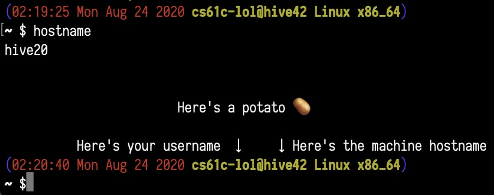

Deadline: Friday, September 4 (extended by 1 week for lab00 only)
Hello! Welcome to CS61C! We’re excited to have you on board :D Please pay attention as we
demonstrate the safety features of this aircraft.
This lab may be a little long, but please read carefully; it covers many important things that will prepare you for the rest of the course!
Each lab will begin with a few objectives; use them to reflect on your learning and guide your thinking! Here are the objectives for this lab:
A quick clarification on some terms:
This semester is going to be one of our largest yet, clocking in at 1200 enrolled (+ 50 on waitlist) as I’m writing this. In order to accomodate all the different situations people are in, we need to know a little more about your preferences for the class.
You can view the course policies on the policies page of the course website. You are responsible for understanding and
adhering to all policies throughout the course of the semester. Please pay particular attention to
the Grading, Labs, and Academic Dishonesty and Cheating sections.
Unfortunately, assignments in this course do require some (sometimes boring) setup. Let’s get that out of the way.
CS 61C primarily uses a couple services for distributing assignments, receiving work, and grading. There’s a brief overview of the important ones in the sections below.
If you’re unable to access any services or resources due to internet access restrictions, please
download and use the Berkeley campus VPN at
https://lib.berkeley.edu/using-the-libraries/vpn. If the campus VPN is inaccessible or doesn’t
work for you, contact us (Piazza preferrably, or email cs61c [at] berkeley.edu) and we can try to
work something out.
Unfortunately, some services and resources may be inaccessible or blocked in certain regions. As I’m writing this lab:
CalVisitor WiFi on campus).(╯°□°）╯︵ ┻━━━┻
Also, this post ended up on Overheard in summer 2020, but with the VPN bit cropped out. Please don’t crop that out, it makes us look evil :(
Most students should have a CalNet ID (and therefore, email ending in @berkeley.edu).
@berkeley.edu email if
possible. This is your “Berkeley Google account” (or bConnected account, but nobody says that).If you would like to use an existing account on a service, try to add your Berkeley email, preferrably as the primary email.
Piazza is a discussion forum that we’ll be using as the main method of communication for this course. All announcements will be made here, and almost all questions or comments you may have should be posted here (unless we say otherwise).
We’ve already emailed invites to the 61C Piazza course to most enrolled students. If you’ve recently enrolled, this may be delayed by several hours while the campus systems process your enrollment.
Please read through the Discussion Forum section of our policies. Please remember and follow the Piazza Etiquette!
The “Hive” is a group of servers maintained by the EECS department. Campus is not exactly open right
now, but they live in Soda 330 if you ever want to give them a hug! You can intearct with these
servers remotely through SSH and the command line (more on that later). We’ve already installed most
of the software we’ll be using on the Hive machines, so you can work on most assignments on the Hive
if you want! You can find a list of Hive machines at Hivemind (the names starting with hive). Every Hive machine
shares the same network mount, so files will be synced across all the machines.
You will need to sign up for an EECS instructional account, which you’ll use to access the Hive.
We’ll also be using your instructional account username as your primary ID for checkoff (though you
can use your @berkeley.edu email address for some exceptions).
Note: If you can’t create an account for whatever reason, don’t worry! Fill out the form in the Non-standard Enrollment section, and continue without an account for now.
Gradescope is the platform we use for submitting and grading assignments. Programming assignments, homework, and quizzes will be submitted here.
We’ve already invited most students to the 61C Gradescope course. To sign in, visit Gradescope, click Log In,
then School Credentials, then CalNet ID.
Warning: Please ensure you set your @berkeley.edu email as your primary email. If not, we
might not be able to find your Gradescope account, and you may receive an F in the class!
GitHub is a hosted Git service we use for code distribution, along with GitHub Classroom tools.
If you have an existing GitHub account, feel free to use that; repositories created in this course are private, and anything you do for this course shouldn’t affect the rest of your GitHub account.
If you don’t have a GitHub account or want to make a new one, GitHub.
Most lectures and other video resources will be uploaded to YouTube. You will need to be signed into YouTube using your Berkeley Google account to view some videos. If you’re unable to view a video, make sure you’re using your Berkeley Google account.
We will be holding meetings (OH, lab checkoff, project parties, lectures, discussions, etc.) over
Zoom. When signing in, use
the Sign in with SSO option, enter berkeley.zoom.us, and sign in with your CalNet ID.
Regularly scheduled meetings (e.g. OH, discussions) will be held in standing Zoom rooms. The links for these can be found in the Zoom Links Piazza post.
Office Hours (OH), checkoffs, and project parties will be scheduled and managed through the OH Queue. Please use your Berkeley Google account when logging in; non-Berkeley Google accounts will not be able to use the OH Queue properly.
Please read the blue info box on the OH Queue page.
When your appointment/ticket is picked up by course staff, a large green Join Call button will
appear on the appointment/ticket page. Clicking this button will take you to a Zoom call with the
staff member. If you’re having issues, let staff know using the OH Queue chatbox.
If you’re enrolled in the course as a Berkeley student, you can ignore this blurb.
If you’re a concurrent enrollment student, or in CS 47C, or otherwise not enrolled in CS 61C, please fill out this form so you can get access to our resources.
If you took CS61A and CS61B, you likely have some experience with a command line interface (CLI) and terminal commands, but we’d like to list some less common commands here that may come in handy during the course. For a review of the basic UNIX commands, look over the CS61B SP19 guide. Be sure to read and understand section B of the guide as well as the commands below, since you’ll need them for Exercise 4.
Example commands will be formatted like:
$ echo "Hello world"
Typing that (without the $) in your terminal will run the command. In this case, it just prints
"Hello world".
Flags are commonly used to specify program options or alter behavior. They usually begin with one or two dashes, and can optionally take an argument.
$ gcc --help
$ echo -e "Hello\nworld"
As a CLI refresher, when typing commands or file paths:
<tab> will autocomplete the current term<up arrow> and <down arrow> will allow you to refill commands you’ve used previously without
typing them again.<ctrl> + a will move the cursor to the beginning of the current line (helpful for fixing
mistakes)<ctrl> + e will move the cursor to the end of the current line (also helpful for fixing
mistakes)<ctrl> + r will let you search through your recently used commandstouch will create a blank file with the file name you provided.
$ touch example.txt
This will create a file named example.txt with nothing inside.
If you’d like to create a file with contents already inside, you can use:
$ echo "Your contents here, inside double quotes" > example.txt
This will create a file with the name example.txt in your current directory. If the file already
exists, it will be overwritten. The file will contain Your contents here, inside double quotes but
without the double quotes. The > symbol takes one argument which redirects where data printed to
stdout is sent. Here, we are redirecting the output of echo to a file named example.txt.
You can also use the echo command by itself, in which case it will print the string to the
terminal (without creating a file in the process).
$ echo "yubi yubi~"
You can view the contents of a file with the cat or less commands.
$ cat example.txt
$ less example.txt
cat print the contents of example.txt to your terminal. less opens a basic editorYou can provide a relative
or absolute path to print out non-local files.
man - Manual PagesThe manual pages (“man pages”) are great UNIX resources that are often underused; while not as versatile as Google, they contain documentation on UNIX components from program usage, language standards and conventions, and more. They also work offline, so they can be handy if you’re ever stuck in a North Alaskan woodland cabin in the middle of a snowstorm basking in the dying glow of a ThinkPad which BTW runs Arch Linux.
While your favorite search engine probably also has the answers you’re looking for, in this course,
we’d still like you to get comfortable with using man, especially for C and UNIX-related
questions.
If you want the man page for a single program/command, you can run:
$ man command_name | less
The man page for a program typically contains information about what the program is used for, what
certain flags do when you invoke the program with them, and where to go for more information. Since
we piped the man page into less, this page is scrollable (use your arrow keys or the space bar).
Hit q to exit the man page and get back to your terminal prompt.
$ man echo | less
The above command should bring up the man page for the echo command.
If you want to search the man pages for a command that pertains to a keyword:
$ man -k single_keyword | less
This command will search the manual pages for a command with the keyword single_keyword. Forget
how to open files in Vim? You can search for editor and get a list of all editor-related commands
on your system.
ssh - “Secure Shell”For this class, we’ll expect you to test most of your projects, homeworks, and labs on the Hive machines. To access the Hive machines remotely, you’ll be using the SSH protocol and programs.
Note: If you weren’t able to get an instructional account, you can come back here later!
You can find a list of Hive machines at Hivemind. There are 30 of them, named hive1, hive2, …, hive30. If its
name starts with hive, it is a Hive machine. If it doesn’t start with hive (sorry ashby), it’s
not a Hive machine.
Sometimes, a Hive machine may be down or overloaded. If you’re getting “Connection refused” or
“Connection timeout” or other connection errors, check Hivemind and pick another machine to use.
Once you have an instructional account, you can SSH into an instructional server with the following command:
$ ssh [email protected]#.cs.berkeley.edu
Remember to replace cs61c-??? with your instructional account username, and hive# with a Hive
machine’s name. The default password is displayed by WebAccount
when creating the account, so you might have to reset your password if you forgot it.
Troubleshooting:
CalVisitor on campus, block SSH. Try another network (AirBears2 or eduroam if
you’re on campus).Connection refused or other weird errors: the Hive machine you picked might be down. Try another
oneReserved for cs61c staff: try another Hive machine :)When your connection succeeds, you should be able to interact with and run commands on your chosen Hive machine! To exit this SSH session, simply run:
$ exit
Files on the Hive machines are stored on a network drive, so your account will have the same files on all 30 machines.
Note: If you want to change your instructional account password, you can SSH into the update server:
$ ssh [email protected]
When you’re in a SSH session, your prompt should look similar to this:

If it looks very different, try running fix-dotfiles.
$ /home/ff/cs61c/bin/fix-dotfiles
If your prompt still looks very different, contact course staff on Piazza.
scp - “Secure Copy”The scp program is used for copying files between computers using the SSH protocol.
Sometimes, you may want to get individual files or entire folders from the Hive machines onto your
local system, or vice versa. You can do this by using scp:
$ scp <source> <destination>
To specify a remote source or destination, use [email protected]:path. To specify a local destination,
just use path. As an example:
$ scp [email protected]:~/some_folder/example.txt ~/Downloads/
Assuming my username is cs61c-???, the above command would connect to hive3 and copy
~/some_folder/example.txt on my instructional account to ~/Downloads/example.txt on my local
machine.
If I wanted to copy the other direction (from my local machine to a Hive machine) I would use:
$ scp ~/Downloads/example.txt [email protected]:~/some_folder/
scp by default only works with files. To copy folders, you need to tell scp to “recursively” copy
the folder and all its contents, which you can do with the -r flag:
$ scp -r [email protected]:~/some_folder ~/Downloads/
Warning: Running scp on the Hive machines (e.g. when you’re in a SSH session) is usually not
desired behavior. Running scp example.txt [email protected] on a Hive machine will
copy example.txt to… the same place. You probably want to run it in a local terminal session!
vim is a text editor included on the Hive machines and many UNIX-based distributions.
Note: We’ll be using Vim in most of our examples and documentation, but we have no hard requirement on which text editor you use; you’re welcome to pick whatever you’re comfortable with, but you should know how to use at least one terminal-based text editor.
To open a file from your current directory, pass the file name to Vim:
$ vim filename
To open a file from another directory, use a relative or absolute path:
$ vim ../other_folder/filename
Some useful Vim commands:
| Command | Explanation |
|---|---|
<escape>:q |
Closes (quits) Vim without saving |
<escape>:wq |
Closes Vim after saving |
<escape>:w |
Saves your file |
<escape>:q! |
Force-quit Vim (for when you’ve made changes but do not wish to save them) |
<escape>i |
Insert mode, allows you to type into the file |
<escape>/cats |
Searches your file for the nearest occurrence of the string “cats”. Press n to go to the next occurrence or N to go to the previous |
<escape>:set nu |
Shows line numbers within your file |
Note: these commands are preceded by <escape> because you’ll need to press the escape key on your
keyboard to switch you out of your current mode. For example, if I’m inserting (typing) into a file
and want to save, I’d have to hit <escape> to get out of insert mode, then type :w to save my
file. If you aren’t in a mode (i.e. you’ve just opened your file) you don’t need to hit escape
first, but it won’t hurt :)
For more on Vim, one of our summer 2020 tutors, Yijie, wrote a great Vim for CS61C guide!
SSH into any Hive machine. Then:
check-register, and verify that your name, email, and
student ID are correct. If anything is incorrect, run re-register.
In this exercise, you’ll get your labs Git repository (“repo”), use Vim, and work with a variety of Git commands. By the end of it, you should feel comfortable using SSH, editing files, pulling/committing/pushing, resolving merge conflicts. If you’d like to review your Git commands before beginning, you can check out this guide.
Make sure you’re logged into GitHub. Fill out the Lab Repository Registration Form. Remember to read the form
carefully, and follow the link in the form to accept our invitation to the GitHub Classroom lab
assignment. You may need to check your email and confirm the invitation. If you don’t have an
instructional account right now, enter zzz in the form. You will be able to edit this later.
Before we start, let’s tell Git who you are. This information will be used to sign and log your commits. You may not need to do this if you’ve set up Git before, but if you’re on the Hive machines it’s likely a step you’ll need to take.
First, run the following commands on your local machine; make sure to change the name and email to match your information.
$ git config --global user.name "John Doe"
$ git config --global user.email [email protected]
If you have an instructional account, SSH into a Hive machine, and run the same commands.
Git has the concept of “local” and “remote” repositories. A local repo is located wherever your terminal session is; if you’re in a SSH session, the local repo is a folder on a Hive machine; if your terminal session on your local machine, the local repo is located on your local machine’s filesystem. A remote repo (e.g. GitHub repo) is typically hosted on the Internet.
GitHub Classroom created a repository for you on GitHub, but not locally (would be a little worrying
if it could access your local files). To get a local copy of this repository, you can use
git clone, which will create a local repository based on information from a remote repo.
If you have an instructional account, SSH into a Hive machine. On the Hive clone the repository into
a folder called labs:
$ git clone GITHUB_REPOSITORY_URL labs
If you don’t have an instructional account, that’s fine! Clone the repository into a folder called
labs_hive. For the rest of this exercise, any reference to your repository on the Hive is
referring to this repository.
$ git clone GITHUB_REPOSITORY_URL labs_hive
cd into this new folder. List all hidden files (ls -a). Do you see a hidden file/folder?
There is indeed a folder called .git. Its presence indicates that the current folder (folder
containing .git) holds a Git repository.
Take a look at your repo’s current remotes and status:
$ git remote -v
$ git status
git clone has already worked a bit of magic here; there’s a remote called origin, and its URL
points to your labs repo on GitHub! You’re on a local branch called master, which is “tracking”
origin/master (the master branch on the origin remote).
Throughout the semester, course staff may make updates to starter code to fix bugs or release new labs. To receive these updates, you’ll need to add another remote.
$ git remote add starter https://github.com/61c-teach/fa20-lab-starter.git
If you ever want to pull updated starter code, you’d execute the following command:
$ git pull starter master
Since GitHub Classroom clones the starter repo when creating your repo, that command shouldn’t do anything right now.
Warning: please read carefully. Skipping a step may cause errors that will require you to redo the exercise.
The files for this exercise are located in the lab00 folder in your lab repository.
The main goal of this exercise is to get you familiar with manpages, Git, and other programs, but not to stress you out over finding commands. If you’re stuck trying to find a command, write your best-effort guess, and the autograder will give hints if the command isn’t what we’re expecting.
Open first_set.txt. This file contains descriptions of UNIX commands. Use the man pages to
figure out which command they refer to. Make sure to include any necessary flags. Once you’ve
found them, write the commands, one per line, in the provided answers.txt file.
answers.txt should look similar to (including the numbers):
first_set_command_1first_set_command_2first_set_command_3first_set_command_4Save, add, and commit your changes with the commit message "Answered first set". Push this
commit to your GitHub repo.
Now, we’ll need to copy the repository to your local computer.
exit. You should be
back to your local terminal prompt. Use scp to copy the entire labs folder from the Hive
to your local machine (refer to Exercise 3 for a refresher on scp). Hint: what does the -r
flag do?labs_hive folder to a separate
labs folder.Once you’ve copied the entire folder, cd into this folder and open your answers file.
Above your previous answers, add commands (and relevant flags, if needed) that fit this second set of descriptions:
answers.txt should look similar to (including the numbers):
second_set_command_1second_set_command_2second_set_command_3second_set_command_4first_set_command_1first_set_command_2first_set_command_3first_set_command_4Save your changes, but do not commit or push them.
Go back to your repo on the Hive. Above your previous answers, add the command (and relevant flags, if needed) that fits this description:
answers.txt should look similar to (including the numbers):
third_set_command_1first_set_command_1first_set_command_2first_set_command_3first_set_command_4Save, add, commit, and push these changes with the commit message "Answered third set".
Go back to your repo on your local machine. Add, commit, and push your changes with the commit
message "Answered second set".
You should get an error message from Git. What does this message mean? How do you resolve it? When resolving this issue, avoid using the rebase command or flags.
After resolving the issue, you should have all your answers in answers.txt on your local
machine. answers.txt should match the following (including the numbers):
Commit and push your changes.
Last bit of reading for this lab, I promise.
To submit your work, push your work to your lab repository on GitHub.
Many of the labs will have an autograder portion. If a lab has an autograder portion, it will
specify this in the Checklist section at the bottom of the page. To submit to the autograder,
you’ll need to push your work to your lab repository on GitHub. Then go to the Lab Autograder
assignment on Gradescope, and submit your lab repository. After a short wait, the page should show
your autograder score for the current lab (and previous labs). Make sure you passed the autograder
tests!
Each labs will require you to complete a checkoff to receieve credit. You will be required to work on labs in pairs, and both partners are required to be present during checkoff. This helps us reduce the time we spend on checkoff and allocate that time towards helping students and developing course materials. It also helps you by giving you someone to discuss class material with and work together with to solve lab problems.
If you have not done so already, please read through the Labs section of our policies.
Before your scheduled checkoff, please make sure that:
Lab Autograder
assignment on Gradescope. Your work should pass the autograder tests, and you should have this
page open for checkoff.cs61c-???, the one you use to
log into Hive machines).We will be using an appointment-based system on the OH Queue to schedule checkoffs. Checkoff slots for the week will be released on Sunday around 9PM PDT. You (and a partner) may then sign up for a 13 minute checkoff slot. If you have a partner, you both must sign up for the same slot (sometimes there are multiple slots at the same time, watch out!). You must have completed the requirements before your checkoff slot starts.
To sign up for a checkoff slot:
Appointments link at the top.Add yourself to the section. Fill out the
resulting form (Assignment: Lab ##, Question: Checkoff, Description:
Partner: <PARTNER_NAME>) and submit it. If you have a partner, you both must sign up for the
same appointment (try to sign up at the same time). If you don’t have a partner, you may be paired
with someone else without one. You may not sign up for more than one appointment per lab.Upcoming Appointments on the home page. When the TA is ready, a green Join Call button will
appear. Click it to be taken to the Zoom call.You will receive credit for a lab after completing a checkoff with a TA/AI. Before leaving the
checkoff call, you must verify this by looking at the Lab## Checkoff assignment on Gradescope, replacing ## with the lab number, and making sure it is Submitted. It is your responsibility to
verify that this happens for each lab; we will not be retroactively giving credit for checkoff.
If you completed checkoff in the correct timeslot, but Gradescope displays a
Submitted ???? late message, you can ignore this message for now; we’ll update this after the lab
deadline has passed.
You made it! That was quite a bit of reading and head-scratching, but you’re now somewhat more familiar with the tools you’ll be using for the rest of the semester. Worth it!
This lab has an autograder. After you’ve pushed your work, submit your GitHub lab repo to the
Lab Autograder assignment on Gradescope. Make sure the autograder passes!
Please check that you and your partner have:
Lab Autograder for this labAfter a TA/AI has checked you off, please make sure that the corresponding lab assignment on
Gradescope (Lab## Checkoff) is marked as Submitted.
These are some tools you may find helpful, but are by no means required for this course :)
CS61C doesn’t endorse any particular text editor or IDE. Many people get by in this course using a text editor with no frills (think: Vim/Emacs/Nano). We’ll expect you to know how to use at least one terminal-based text editor (again, Vim/Emacs/Nano), since you’ll be dealing with the command line a lot.
For your own work, you may find it nice to have CLion from JetBrains if you’re used to working in IntelliJ from CS61B. Note though that we won’t be providing any course-official support, so setting it up and maintaining it are up to you.
The majority of students do their work in a local editor (Sublime, Atom, VSCode) and use Git to copy their files from their local machine to the Hive. Some students also set up Cyberduck to make copying files over easier. Again, we won’t provide any course-official support, but you’re welcome to do what works best for you.
Tired of typing up an entire SSH command and password? Follow the instructions on this Piazza
post ("Useful additional setup information for labs and projects")